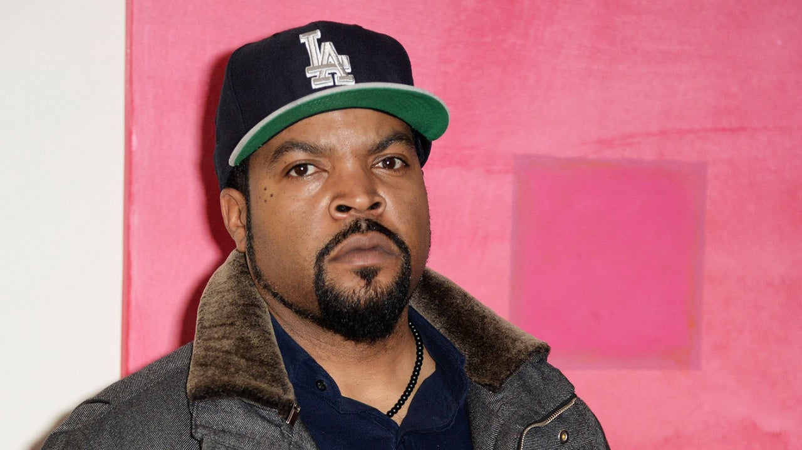

Ice Cube
Born: 15 June 1969
Age:
Years Active: 1986–present
Genre/s: West Coast hip-hop, gangsta rap, political hip-hop
Label/s: Lench Mob, Priority, Aftermath, EMI, Interscope
Member of: Mt. Westmore
O'Shea Jackson (born June 15, 1969), known professionally as Ice Cube, is an American rapper, songwriter, actor, and film producer. His efforts on N.W.A's 1989 album Straight Outta Compton contributed to gangsta rap's popularity, and his political rap solo albums AmeriKKKa's Most Wanted (1990), Death Certificate (1991), and The Predator (1992) were all critically and commercially successful. He was inducted into the Rock and Roll Hall of Fame as a member of N.W.A in 2016.
A native of Los Angeles, Ice Cube formed his first rap group called C.I.A. in 1986. In 1987, with Eazy-E and Dr. Dre, he formed the gangsta rap group N.W.A. As its lead rapper, Ice Cube also wrote most of the lyrics on Straight Outta Compton, a landmark album that shaped West Coast hip-hop's early violent and controversial identity and helped differentiate it from East Coast rap. After a monetary dispute over the group's management by Eazy-E and Jerry Heller, Ice Cube left N.W.A in late 1989 and embarked on a solo career, releasing eleven albums, with seven charting within the top-10 on the U.S. Billboard 200. His singles "Straight Outta Compton", "It Was a Good Day", "Check Yo Self", "You Know How We Do It", "Bop Gun (One Nation)", "Pushin' Weight", and "You Can Do It" all charted in the top-40 on the U.S. Billboard Hot 100.
Ice Cube has also had an active film career since the early 1990s. His first acting role was in the hood film Boyz n the Hood (1991), named after a 1987 N.W.A. song he wrote. He also co-wrote and starred in the 1995 comedy film Friday, which spawned a franchise and reshaped his public image into an actor. He made his directorial debut with the 1998 film The Players Club, and also produced and curated the film's accompanying soundtrack. His film credits including the comedies Three Kings (1999), the Barbershop and Are We There Yet? franchises, 21 Jump Street (2012), 22 Jump Street, Ride Along (both 2014) and Ride Along 2 (2016). He has also appeared in the XXX franchise (2005–2017), the crime drama Rampart (2012), the animated fantasy The Book of Life (2014), and the thriller War of the Worlds (2025). Ice Cube has also acted as executive producer, including for the 2015 biopic Straight Outta Compton.